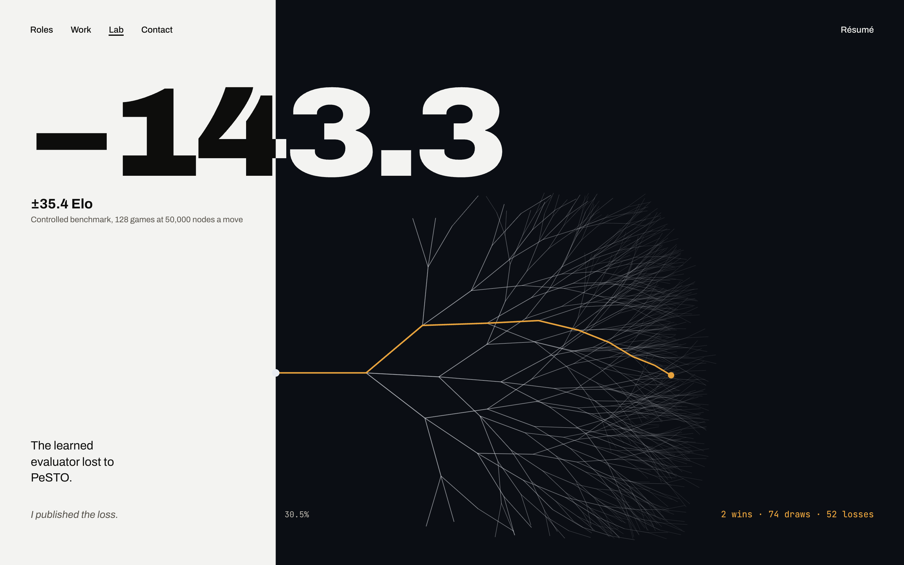

The seam at the match score
Unchanged from lab-a. In motion, the camera dives from here into the search.
lab-a

Terrain and circuit
The seam at 50% splits the two judges. PeSTO's knight table as porcelain terrain, the knight on its f6 peak; the learned net as a basalt knight with the copper trace from Work.
lab2-1

A stack, to scale
The seam at 56.6%, the share kept. The kept stack stands in the dark, 57% of its read height (dashed); the rest lies spilled on the white side. One sheet set apart is the 40,000 held-out positions.
lab2-2

The same knight, cast three times
Raw clay, bisque, glaze: the finish is the score (0.31, 0.50, 0.64). A day studio, the one all-white chapter.
lab2-3

Dead level
The seam dead centre. 50 boards, each showing its real opening from the match suite, lit by day on one side and by night on the other.
lab2-4

The seam falls with the score
Start: game 1, seam at 50%, the first draw falling. End: game 128, seam at 30.5%, where the hero began. 2 white, 74 grey, 52 black stones.
lab2-5a, lab2-5b


±60, to scale
Plinths at piece values (900, 500, 330, 320, 100, the engine's own). The learned knight stands on a copper plinth lower than the pawn's.
lab2-6

The seam runs through the board
The seam sits at the learned net's score (+0.43, 53.9%) and would move with every move. The board is day-lit on your side of the eval and night-lit on the engine's.
lab2-7